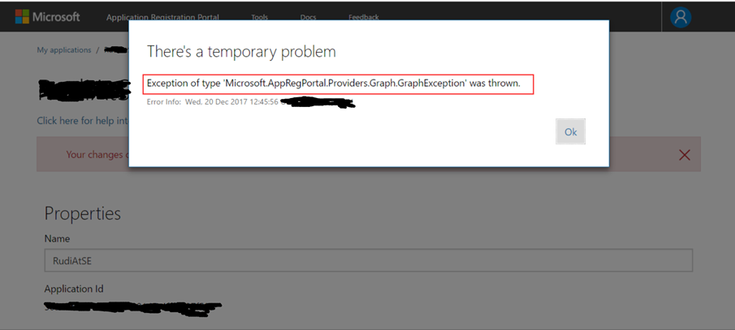
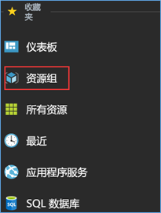
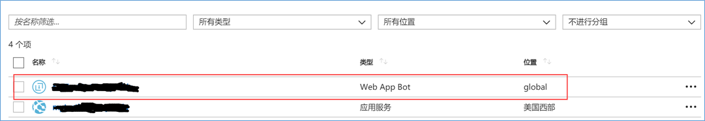
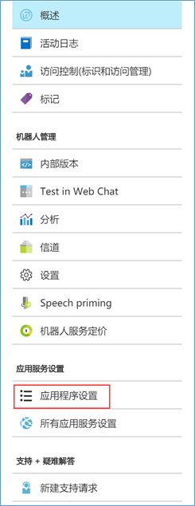
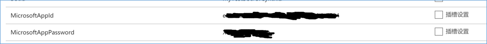

摘要：Azure Bot Service 半个月前刚刚正式上线，这个产品就遇到了一些问题。其中一个问题就是在Bot Service管理Portal上面创建Bot Application 密码的时候, 会提示错误。而这个密码在第一次生成之后就没法在这个管理Portal再次看到他的全部内容。这样密码一旦忘记或者丢失，就会陷入两难的境地。既拿不回密码，也不能创建新密码。Bot Application整个就废在一个密码上。经过一些调查之后，发现其实还有一些门道在Azure Portal上拿回这个密码，这里把步骤分享给大家。
问题描述：
Azure Bot Service 于2017年12月13日正式宣布GA。跟Bot Service 一同GA的还有Microsoft Cognitive Service Language Understanding (LUIS) 服务。这本来是一个非常振奋人心的消息。不过，稍微有些让人感觉到不足的地方就是Bot Portal上面出现 一些问题。当一部分用户尝试在 https://dev.botframework.com/bots 站点上给自己的Bot Application 重现生成一个密码的时候，会碰到下面的这个异常。
Exception of type ‘Microsoft.AppRegPortal.Providers.Graph.GraphException’

由于在这个Portal上创建的密码，只会在第一次出现全文。Portal上也会做出相应的提示，要求保存好这个密码，之后不会再提示错误。一旦密码忘记或者遗失，最好的办法就是重新创建一个新的密码。这个本来是非常方便的一个事情。但是由于Portal上遇到了这个Bug，一旦密码遗失，就无法重新创建新密码，自己的Bot Application 就不能使用。造成了非常不必要的麻烦。这个问题，在全球范围内有很多的用户都遇到了。考虑到这一点，我猜测应该会有一些workaround，即使不能在(https://dev.botframework.com/bots) 网站上找回密码，也不能在这上面创建密码。也应该有其他的地方可以找回这个密码。
功夫不负有心人，终于在 Azure Portal 的边边角角上找到了明文显示这个密码的地方。
WORKAROUN：
Bot Application的密码可以通过下面的步骤重新找回来。
- 登陆Azure Portal。 (https://portal.azure.com)
- 在左侧的导航栏上点击资源组。
 - 点击Bot Application 所在的资源组。然后点击Bot Application的应用。
 - 在左侧导航栏上找到应用程序设置。
 - 在这里能看到所有跟Bot Application相关的设置，其中也包括MicrosoftAppId 和 MicrosoftAppPassword.

通过这个方法可以暂时先拿回遗忘掉的密码。生成新密码的办法，只好等微软的产品组修复了问题之后再解决了。
Sonic Guo